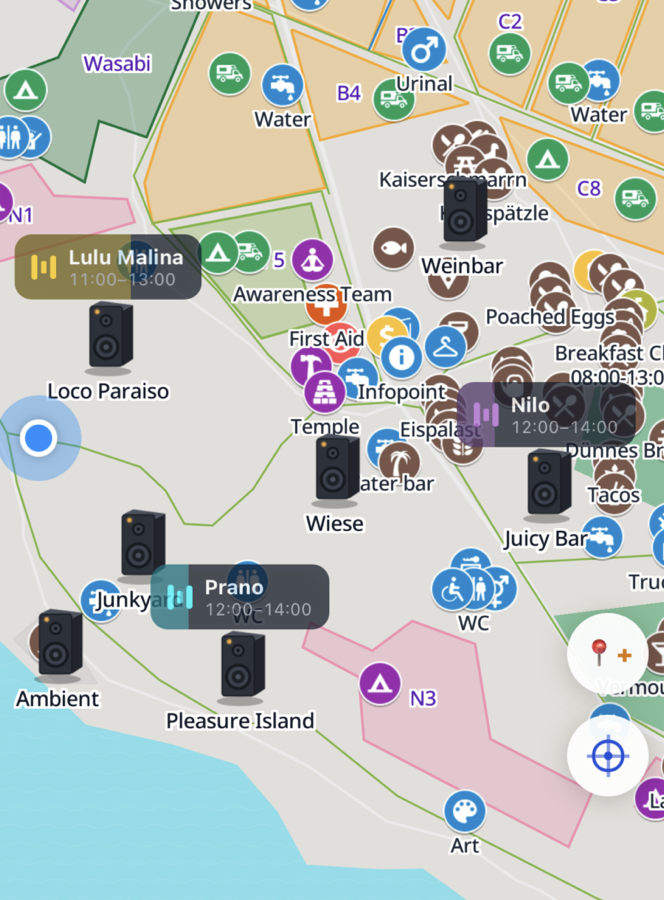
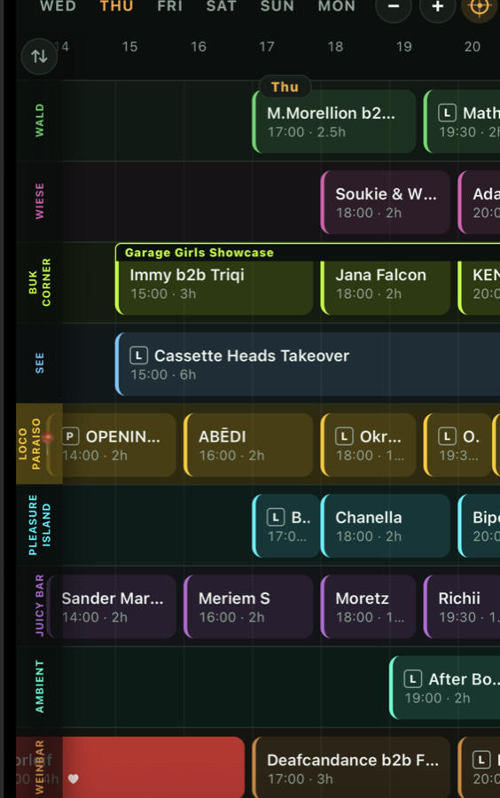

GARBICZ
Offline festival map & set times for Garbicz
Unofficial, fan-made app. Not affiliated with or endorsed by any event organizer.
📱 iPhone 2 apps to install
⚠️ On iPhone you install two separate apps
- TestFlight — Apple's app for testing apps. Get it from the App Store. This is not Garbicz.
- Garbicz — tap the button below, TestFlight opens, then tap Install. This is the actual map app.
Afterwards open Garbicz (the unicorn icon), not TestFlight.
🤖 Android
- Download the app file below
- Open it and allow installing from this source if asked


What it does
🔌 Works with no signal at all
The map, every marker and the full lineup are already on your phone the moment you install it. No signal at the lake, no problem — nothing loads, because nothing needs to.
🎧 See what's playing, right now
Live banners float over each stage with the artist and how far through the set they are. Multi-room stages like Lichtung and Junkyard show every room at once, so you can see what you're missing before you walk.
🚻 Find the nearest toilet, water or food in one tap
Filter the map to WC, water, food or top-up and everything else fades away. Places that are closed right now are dimmed, so you don't walk to a shut bar at 4am.
♥ Favourite sets — and actually get reminded
Hold any set to favourite it, then pick 15 min, 30 min or 1 hour before. The reminder arrives even if your phone is locked and the app is closed.
↗ Swap lineups with your friends
Send your favourites to a friend over AirDrop, WhatsApp or any chat. Their picks glow on your timeline next to yours, so you can find each other's plans without a word of signal.
📍 Never lose your tent again
Drop your own pins — your tent, your car, where you left the bikes — and see yourself moving on the map with GPS. It works in the middle of a field at 3am, because GPS doesn't need internet.
📓 The details that matter
Set descriptions, workshop and talk labels, showcase runs, per-set notes, and a schedule you can pinch to zoom from the whole weekend down to a single hour.
Works fully offline. Map, markers and set times are on your phone from the first launch — no signal needed at the festival. With internet, it quietly picks up map updates.
Private. Your location never leaves your phone. No accounts, no tracking.
Questions or problems? Message me.